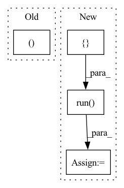

Pattern ID :36970
Before Change
// Test latency parsing
test_latency_output = "Avg latency: 5000 ms\n\n\n\n"
self.perf_mock.set_perf_analyzer_result_string(test_latency_output)
_, latency_record = perf_client.run()
self.assertEqual(latency_record.value(), 5000)
// Test throughput parsingAfter Change
// Test throughput parsing
test_throughput_output = "Throughput: 46.8 infer/sec\n\n\n\n"
self.perf_mock.set_perf_analyzer_result_string(test_throughput_output)
perf_tags = [ PerfThroughput = perf_analyzer.run( perf_tags)
self.server.stop()
def tearDown(self):In pattern: SUPERPATTERN
Frequency: 3
Non-data size: 4
Instances Fragment ID: 105216837
Project Name: triton-inference-server/model_analyzer
Commit Name: c56ce95ea91dc842faf12a9f8b8da0075734f4a1
Time: 2020-11-24
Author: asramesh@nvidia.com
File Name: tests/test_perf_analyzer.py
M Class Name: TestPerfAnalyzerMethods
N Class Name: TestPerfAnalyzerMethods
M Method Name: test_run(2)
N Method Name: test_run(2)
M Parent Class: trc.TestResultCollector
N Parent Class: trc.TestResultCollector
M File Name: tests/test_perf_analyzer.py
N File Name: tests/test_perf_analyzer.py
M Start Line: 110
M End Line: 139
N Start Line: 110
N End Line: 155
Before Change
Test methods for HighBiasFold
def test_find_high_bias_fold(self):
model_onnx, model_torch = models_for_tests.get_single_residual_model_and_torch_model()
input_shape = (1, 3, 32, 32)
test_data = np.random.randn(*input_shape).astype(np.float32)After Change
hbf.bias_fold(cls_set_info, bn_dict)
hbf_session = _build_session(model_onnx)
output_after_hbf_onnx = hbf_session.run( None, { "input": test_data} )
// TODO: Check if this is the right criteria to check. Currently, this test is ineffective since hbf does not
// end up changing anything in the model.
assert np.allclose(output_after_cls_onnx, output_after_hbf_onnx, rtol=1e-2)
Fragment ID: 105216829
Project Name: quic/aimet
Commit Name: 416d71add75bca43796a63712588d928d684366d
Time: 2023-05-01
Author: quic_klhsieh@quicinc.com
File Name: TrainingExtensions/onnx/test/python/test_cross_layer_equalization.py
M Class Name: TestHighBiasFold
N Class Name: TestHighBiasFold
M Method Name: test_find_high_bias_fold(1)
N Method Name: test_find_high_bias_fold(1)
M Parent Class:
N Parent Class:
M File Name: TrainingExtensions/onnx/test/python/test_cross_layer_equalization.py
N File Name: TrainingExtensions/onnx/test/python/test_cross_layer_equalization.py
M Start Line: 194
M End Line: 219
N Start Line: 190
N End Line: 215
Before Change
if trainin_is_tf_placeholder:
bn_training = tf.compat.v1.placeholder_with_default(False, shape=[], name="bn_is_training_placehoder")
for pair in bn_conv_linear_pairs:
_, batchnorm, _ = pair
beta = BNUtils.get_beta_as_numpy_data(sess, batchnorm.op).reshape(-1)
gamma = BNUtils.get_gamma_as_numpy_data(sess, batchnorm.op).reshape(-1)
mean = BNUtils.get_moving_mean_as_numpy_data(sess, batchnorm.op).reshape(-1)After Change
mean_read_var = BNUtils.get_moving_mean_read_var_op_tensor(sess.graph, batchnorm_tensor.op)
var_read_var = BNUtils.get_moving_variance_read_var_op_tensor(sess.graph, batchnorm_tensor.op)
beta, gamma, mean, var = sess.run([ beta_read_var, gamma_read_var, mean_read_var, var_read_var)
beta_init = tf.compat.v1.constant_initializer(beta, dtype=tf.float32, verify_shape=True)
gamma_init = tf.compat.v1.constant_initializer(gamma, dtype=tf.float32, verify_shape=True)
mean_init = tf.compat.v1.constant_initializer(mean, dtype=tf.float32, verify_shape=True) Fragment ID: 105216828
Project Name: quic/aimet
Commit Name: 238fb5337c74da93a3980f92773fcd6492ba5031
Time: 2022-10-19
Author: quic_kyuykim@quicinc.com
File Name: TrainingExtensions/tensorflow/src/python/aimet_tensorflow/utils/op/bn_mutable.py
M Class Name: AnonimousClass
N Class Name: AnonimousClass
M Method Name: modify_sess_bn_mutable(4)
N Method Name: modify_sess_bn_mutable(4)
M Parent Class:
N Parent Class:
M File Name: TrainingExtensions/tensorflow/src/python/aimet_tensorflow/utils/op/bn_mutable.py
N File Name: TrainingExtensions/tensorflow/src/python/aimet_tensorflow/utils/op/bn_mutable.py
M Start Line: 75
M End Line: 97
N Start Line: 78
N End Line: 106